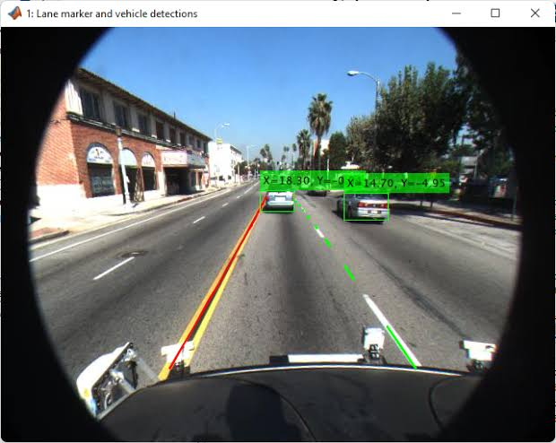

Hello, I'm Christen Mae Florentino
An information technology senior dedicated to building practical software solutions. Currently researching and developing intelligent computer vision systems focused on automated road accident detection and emergency response.
Christen Mae
Road Safety & Vision
Computer Vision & Safety Systems
4th Year Senior Student
Python, OpenCV, Web UI
About Me
Christen Mae Florentino
BSIT College Senior
Background & Aspirations
As a fourth-year Bachelor of Science in Information Technology student, I am passionate about leveraging technology to improve public safety and urban infrastructure. My academic coursework emphasizes system analysis, software engineering principles, and intelligent automation.
Research & Development Interests
- Real-Time Video Analytics & Object Detection
- Automated Incident Alert Systems for Highways
- User Interface Design & Responsive Web Portals
- Database Management & Information Security
Technical Skills
psychology Vision & Development Stack
storage Tools & Databases
Featured Capstone Project

Road Accident Detector
Real-Time Road Accident Detection System
A computer vision and software monitoring platform designed to analyze live traffic video feeds, instantly detect vehicle collisions or roadway accidents, and dispatch immediate alerts to local emergency response dashboards.
Get in Touch
I am currently open to professional software development internships, tech collaborations, and inquiries regarding my capstone accident detection research.